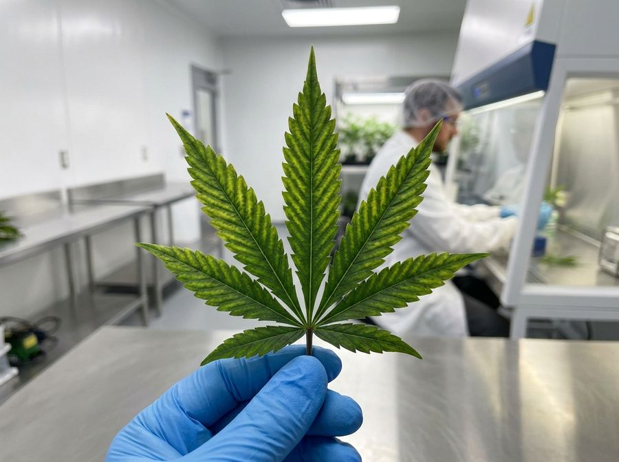

Diagnosis of nutrient deficiency and toxicity
This paper shows you how to read the symptoms on cannabis leaves from the position, color and shape. You will know how to find the difference between mobile and immobile nutrient deficiencies. You will also know how to find the difference between a deficiency, a toxicity and a pH lockout. Before you change your feed, you will know how to make sure of the diagnosis with a pH meter and an EC meter.
Purpose and scope
A cannabis plant shows you the nutrients that it does not have in sufficient quantity, and the nutrients that it has too much of. It shows them through the color, the shape and the position of the symptoms on its leaves. This paper shows you how to read these signals with a method. Thus you find the cause, and you do not add fertilizer when it is not necessary.
The most important fact comes first: where a symptom shows on the plant is usually more important than the color of the symptom. A symptom shows on the old leaves at the bottom or on the new leaves at the top. If you use this one method, you decrease the list of possible causes to approximately half.
A nutrient is one of the approximately 17 chemical elements that a plant must absorb for growth[8]. The nutrients that you change most frequently are nitrogen (N), phosphorus (P) and potassium (K). Other nutrients are calcium (Ca), magnesium (Mg), sulfur (S), and small quantities of micronutrients, for example iron and zinc.
Three different problems can have almost the same symptoms on a leaf. A deficiency is the condition when the plant does not have a sufficient quantity of an element. A toxicity is the condition when the plant has too much of an element. A pH lockout is the condition when the element is in the water, but the roots cannot absorb it. The primary task is to find the difference between these problems.
| Problem | Definition | The sign that identifies it |
|---|---|---|
| Deficiency | The plant does not have a sufficient quantity of an element | The green color decreases gradually. New growth has less green color. |
| Toxicity | The plant has too much of an element or salt | Dark green leaves with the claw, and tip burn |
| pH lockout | The element is in the water, but the roots cannot absorb it | Symptoms of a deficiency when the feed is correct |
Examine the new growth, not the old leaves, to know if the plant is in good condition again. A leaf that has damage does not become green again after you correct the cause. When a leaf shows damage, the plant did not have a sufficient quantity of the nutrient for some days. A diagnosis from the symptoms is not fast.
Definitions
Before you do a diagnosis, you must know some terms that growers use frequently. The definitions are easy. Read this section one time, and go back to it when necessary.

Evidence and limitations
We want each paper to be correct. Thus we examine each paper for information that is not solid. This information comes from the view of one grower, from a small number of sources, or from grower methods that have no controlled test. We identify this information, and we do not show it as solid.
Frequently there is no paper for the decision that you must make. Then we use the reports of other growers and the methods that work in the rooms that we know. This information can help you, but it is not the result of a laboratory test. Use the methods that work for your plants, for your room and for your meters. If a table does not agree with your crop, use the data from your crop and record the difference.
- The position of a symptom on the plant, for a mobile nutrient or an immobile nutrient, is a good first step to find the cause.
- A pH lockout, too much water and light stress can show the same symptoms as nutrient problems.
- Guides to the symptoms of N, P, K, Mg, Ca and Fe on cannabis.
- A visual identification of the problem as a result that is as sure as a laboratory test, with no test of tissue or substrate.
- An atlas of micronutrients with missing parts. Be more careful with Zn, B, Mn, Cu and Mo.
If you find an error, make a report. We will correct it. Make the report on GitHub, with the name of the paper and the information that is incorrect. If you have a source, include it: Make a report of an accuracy problem. The regulations, labels and licenses of your area always override each procedure in these papers. The label weak in a paper shows the points where the risk of an error is highest.
Leaf position and nutrient mobility
When a plant does not have a sufficient quantity of a mobile nutrient, the plant removes the element from its old leaves. Then the plant sends the element to the new growth at the top. The damage shows first at the bottom of the plant, and then at higher leaves. Immobile nutrients stay in the cell walls where the plant puts them, and the plant cannot remove them. Thus, when the plant does not have a sufficient quantity of an immobile nutrient, the new growth at the top shows the damage first. The old leaves stay in good condition.[2]
This one method decreases the list of possible causes to approximately half before you examine the color.
- Chlorosis and then necrosis on the bottom leaves or the old leaves, that continue to the higher leaves, are a sign of a mobile nutrient. The nutrient is nitrogen, phosphorus, potassium or magnesium.
- New leaves at the top with a twisted shape, with less green color, or with bent tips are a sign of an immobile nutrient. The bottom leaves are in good condition. The nutrient is calcium, sulfur, iron, zinc, manganese or boron.
- Equal symptoms on all the plant, or damage on the two ends at the same time, are not a sign of one deficiency. They are a sign of a pH lockout, a root problem or stress from the environment.
At the end of flowering, the plant moves the nitrogen to the buds. As a result, it is usual that the green color of the leaves decreases from the bottom up. The same symptom is usual at week 7, and it is a problem at week 2. Thus the week of the growth stage is necessary information before you make a change.
Deficiency, toxicity and pH lockout
The most frequent error of a new grower is this. The grower sees yellow leaves and thinks that the plant does not have sufficient nutrients. Then the grower adds more fertilizer. More fertilizer makes a toxicity or a lockout much worse. A toxicity shows as dark green leaves with the claw, and tip burn. This symptom is the opposite of leaves with less green color.
In a pH lockout, the nutrient is in the water at the roots, but the roots cannot absorb it. The cause is the pH, and the uptake stops when the nutrient is in the water. Only a correction of the pH lets the roots absorb the nutrient again.
- Deficiency: The green color decreases gradually and the leaves become yellow. The new growth is smaller. After some time, the leaves fall from the plant. The plant has less and less green color.
- Toxicity (too much feed): The leaves become dark green and glossy. The tips have tip burn: they become brown and bend. If the nitrogen is very high, the leaf tips bend down. This shape is the claw.[5]
- pH lockout: The usual symptoms of a deficiency show, frequently of iron, or of calcium and magnesium. They show when the feed is correct, because the pH is not in the range where the roots can absorb the nutrients.[6]
| Symptom that you see | If it is a deficiency | If it is a toxicity | If it is a lockout | First task |
|---|---|---|---|---|
| Yellow leaves | The plant does not have a sufficient quantity of an element | Too much salt. The roots do not get sufficient nutrients | The pH stops the uptake | Measure the pH before you apply feed |
| Brown tips that are dry | Not sufficient potassium (edges) | Nutrient burn, or damage from salt | Not sufficient micronutrients, frequently because of the pH | Measure the EC of the runoff |
| Dark green leaves with the claw | Not frequent | Too much nitrogen | Not usual | Decrease the feed strength |
Before you apply a treatment for a deficiency, measure the pH. If the pH is not in the range, correct the pH. Then monitor the plant again for some days, before you think that the plant does not have a sufficient quantity of a nutrient. A pH that is not in the range causes lockout when the feed is correct.[6]
pH targets for each substrate
Each nutrient dissolves, and the plant can absorb it, only in one range of pH. If the pH in the root zone is not in the correct range, some nutrients do not stay dissolved at the same time. Then the plant does not have sufficient nutrients, but the substrate contains the nutrients. A correct pH prevents more deficiencies than a fertilizer corrects.
The correct target pH is different for each substrate. Soil has a buffer, and its target range is higher. Coco and hydroponics have no buffer. Thus you must adjust the pH with high precision.
| Substrate | Target pH | Good range | Frequency of measurement | Buffering |
|---|---|---|---|---|
| Soil | 6.0-7.0 | 6.2-6.8 | Each week | High. Small errors do not cause a problem. |
| Coco | 5.5-6.5 | 5.8-6.2 | With each feed | None |
| Hydro | 5.5-6.5 | 5.8-6.2 | Each day | None |
- More than approximately 6.5 in coco or hydro: iron, manganese, zinc and boron do not stay dissolved. Chlorosis in the new growth is possible, with the symptoms of a micronutrient deficiency.[6]
- Less than approximately 5.5: calcium, magnesium and phosphorus are in lockout.
- A small change of the pH in the range (for example 5.8-6.2) gives each nutrient a time when the plant can absorb the maximum quantity. But keep the pH in the range for your substrate.
Reference table of symptoms for each nutrient
Use the reference table at the plant. For each nutrient, the table gives the position on the leaf and the color or shape of the symptom. It also gives the one sign that shows the difference from problems with almost the same symptoms. Use the method of old leaves and new leaves, from the section before, to find the correct row quickly.
| Nutrient | Mobile? | Position | Color or shape | The sign that shows the difference |
|---|---|---|---|---|
| Nitrogen (N) | Mobile | Old leaves at the bottom | All the leaf has less green color equally, then it becomes yellow and falls from the plant | The most frequent deficiency. Too much N gives dark green leaves with the claw. |
| Phosphorus (P) | Mobile | Old leaves at the bottom | Dark leaves, matt, with bronze, gray or purple patches | Some cultivars are purple without a deficiency. Do not use only the stems to make a decision. |
| Potassium (K) | Mobile | Old leaves at the bottom | Tip burn: the tips and the edges are brown and dry. The middle of the leaf stays green. | The damage is at the edges. Nitrogen gives a fade of all the leaf. |
| Magnesium (Mg) | Mobile | Old leaves at the bottom | Interveinal chlorosis. The veins stay green. | Starts in the middle of the leaf, and goes slowly to the other parts of the leaf |
| Calcium (Ca) | Immobile | New leaves at the top | New growth with a twisted shape and brown patches | A change of shape, not only of color |
| Sulfur (S) | Low mobility | New leaves at the top | New leaves with less green color, or yellow | All of the new leaf has less green color. It is not interveinal chlorosis. |
| Iron (Fe) | Immobile | New leaves at the top | Interveinal chlorosis with a very strong yellow color. The veins stay green. | Very frequent when the pH is high. The symptom is on the top leaves. |
Two of these nutrients give almost the same symptoms, and these symptoms cause errors for new growers frequently. Magnesium and iron cause interveinal chlorosis with green veins.[4] The position shows the difference. Magnesium causes it on the old leaves at the bottom. Iron causes it on the new growth at the top.
How to make sure of the diagnosis with pH, EC and runoff
A diagnosis is a loop, and not a decision without data. Examine the leaves. Then make sure of the cause with two meters that have a low cost, before you make a change. Measure the EC and the pH of the input and of the runoff from the pot. The measurements show if the root zone has a deficiency, a toxicity or a lockout.
- 1Step 1: measure the input pH and ECMake sure that the feed pH is correct for your substrate: 5.8-6.2 in coco or hydro, approximately 6.5 in soil. Make sure that the strength is correct for the growth stage.
- 2Step 2: measure the runoffIn coco, the runoff EC is usually approximately equal to the input EC. If the runoff EC is more than the feed EC by approximately 0.3–0.5 mS/cm (or more) for some days, the salt increases. The feed is too strong. Plants with less green color and a low runoff EC show that the feed is too weak.
- 3Step 3: select the correction for the causeIf there is a lockout or too much salt, flush the root zone with water that has the correct pH. Use water with no nutrients, or with a low feed strength. Do this until the runoff EC is usual, and then start the feed again. If the feed is too weak, increase the EC gradually. If one nutrient is not sufficient, correct the pH first. Then add that nutrient.
- 4Step 4: monitor the new growthExamine the new leaves, and not the leaves with damage, for 5-10 days. The new leaves show if the plant is in good condition again. A leaf with damage does not become green again.
The runoff EC in coco is usually approximately equal to the input EC. If the runoff EC is more than the feed EC by approximately 0.3–0.5 mS/cm for some days, the salt increases faster than the plant uses it. The correct task is a flush. More feed is not correct.
Troubleshooting
Most of the deficiencies that new growers find are pH lockout, too much water, or damage from light. These problems have the symptoms of a deficiency. If you know these problems, you do not add fertilizer to a plant that has too much water, damage from light or a lockout. When you are not sure, make only one change at a time and wait.
| Problem | Same symptoms as | Sign that shows it | Examine this, not the feed |
|---|---|---|---|
| Too much water | Nitrogen toxicity (leaves bend down, with the claw) | The substrate is wet, and the plant uses water slowly | The moisture of the soil, the drainage of the pot |
| Root rot | Many deficiencies at the same time | Brown roots that are soft and wet, and an unwanted odor | The condition of the roots, the oxygen at the roots |
| Stress from light or heat | Nutrient burn, or a deficiency | Damage only on the top of the canopy, near the lamp | The distance to the light, the canopy temperature |
| pH lockout | A deficiency of iron, or of calcium and magnesium | Symptoms of a deficiency when the feed is correct | The pH of the input and of the runoff |
| Nutrient antagonism | A deficiency of calcium and magnesium | It occurs after too much of one element | If you added too much K |
Nutrient antagonism is the problem that is not easy to find. Too much of one element stops the uptake of a different element at the uptake sites of the root. Too much potassium decreases the uptake of calcium and magnesium. Thus a deficiency of calcium and magnesium can be a result of too much potassium. Because of this, too much of one element in the feed makes the problem worse.[9]
Expected results and limitations
A diagnosis gives you a list of possible causes with confidence. It is not as accurate as a laboratory test. The symptoms that you see are almost the same for some problems, and only a test of the tissue or of the substrate is accurate.[1] Leaves with damage do not become green again. Thus the correct result is new growth in good condition, not damaged leaves that become green again.
- You will find the correct type of problem (mobile or immobile, and deficiency, toxicity or lockout) more frequently than the correct element. This information is usually sufficient to make a correct change.
- After you make a correct change, examine the new growth. The new growth is in good condition in a maximum of approximately 5-10 days. The leaves that have damage do not become green again. You can keep them on the plant or remove them.
- One correct procedure for the measurement of pH and EC prevents most nutrient problems. If you apply a correction for each element, the procedure is not correct.
- For crops with a high value, or for commercial crops, use a test of the leaf tissue or of the substrate. The test makes sure of the diagnosis when the symptoms can have more than one cause. Do not make a decision only from the symptoms that you see.
The visual method is a fast first check. It is not the last diagnosis. Most problems do not occur if the pH and the feed strength stay stable. Thus make the procedure first, and use the diagnosis as a second check.
Next, make the two procedures correct, because they prevent most of these problems. Read the pH management paper. Then read the nutrient mixing paper, to make the feed correct from the start.
References
- Cockson, P., Landis, H., Smith, T., Hicks, K., & Whipker, B. E. (2019). Characterization of Nutrient Disorders of Cannabis sativa. Applied Sciences, 9(20), 4432. https://doi.org/10.3390/app9204432 https://www.mdpi.com/2076-3417/9/20/4432
- Maillard, A., Diquelou, S., Billard, V., Laine, P., Garnica, M., Prudent, M., Garcia-Mina, J.-M., Yvin, J.-C., & Ourry, A. (2015). Leaf mineral nutrient remobilization during leaf senescence and modulation by nutrient deficiency. Frontiers in Plant Science, 6, 317. https://doi.org/10.3389/fpls.2015.00317 https://pmc.ncbi.nlm.nih.gov/articles/PMC4429656/
- Bevan, L., Jones, M., & Zheng, Y. (2021). Optimisation of Nitrogen, Phosphorus, and Potassium for Soilless Production of Cannabis sativa in the Flowering Stage Using Response Surface Analysis. Frontiers in Plant Science, 12, 764103. https://doi.org/10.3389/fpls.2021.764103 https://pmc.ncbi.nlm.nih.gov/articles/PMC8635921/
- Morad, D., & Bernstein, N. (2023). Response of Medical Cannabis to Magnesium (Mg) Supply at the Vegetative Growth Phase. Plants, 12(14), 2676. https://doi.org/10.3390/plants12142676 https://pmc.ncbi.nlm.nih.gov/articles/PMC10386616/
- Saloner, A., & Bernstein, N. (2020). Response of Medical Cannabis (Cannabis sativa L.) to Nitrogen Supply Under Long Photoperiod. Frontiers in Plant Science, 11, 572293. https://doi.org/10.3389/fpls.2020.572293 https://www.frontiersin.org/journals/plant-science/articles/10.3389/fpls.2020.572293/full
- Neilsen, D., Neilsen, G. H., Sinclair, A. H., & Linehan, D. J. (1992). Effect of rhizosphere pH on the availability and uptake of Fe, Mn and Zn. Plant and Soil, 145(1), 45-50. https://doi.org/10.1007/BF00009540 https://link.springer.com/article/10.1007/BF00009540
- Liu, G., Hanlon, E., & Li, Y. (2017). Movement of Plant Nutrients (HS1373). UF/IFAS Extension, University of Florida. https://edis.ifas.ufl.edu/publication/HS1373 (source not from a journal, for example from a manufacturer) https://edis.ifas.ufl.edu/publication/HS1373
- Hawkesford, M., Horst, W., Kichey, T., Lambers, H., Schjoerring, J., Skrumsager Moller, I., & White, P. (2012). Functions of Macronutrients. In P. Marschner (Ed.), Marschner's Mineral Nutrition of Higher Plants (3rd ed., pp. 135-189). Academic Press. https://doi.org/10.1016/B978-0-12-384905-2.00006-6 https://www.sciencedirect.com/science/article/pii/B9780123849052000066
- Fageria, V. D. (2001). Nutrient interactions in crop plants. Journal of Plant Nutrition, 24(8), 1269-1290. https://doi.org/10.1081/PLN-100106981 https://www.tandfonline.com/doi/abs/10.1081/PLN-100106981
Each citation in the paper, for example [1], refers to an item in this list. Each item is a primary source or an instruction from an authority, unless the item shows a different type. The results of cannabis tissue culture change much with the genotype. Before you use the dilutions, hormone doses and local regulations, make sure that they agree with the primary sources.